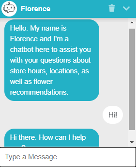

Like I said in homepage, I've always had an affinity towards technology and lately what's been ITCHING me is learning about AI and how it works.
One day, I found myself bored and I suddenly remembered that when I had an e-commerce store I would always think to myself:
It used to be very OVERWHELMING when I had to answer so many messages and calls through my phone.
So I've been researching about ChatBots, how they work, how they can respond to different inputs so quickly.
I stumbled upon ChatBots made with Watson Assistan technology, and I decided to challenge myself with the task of building a simple test bot.
After a few days I managed to make my first little ChatBot that simulated customer service in a flower shop based in Vancouver and Montreal, I named the chatbot Florence and connected it to a WordPress webpage, here's a photo with the example of the bot:
And here's the link to the WordPress page, remember it was an example it only answered basic questions of the simulated WebPage: